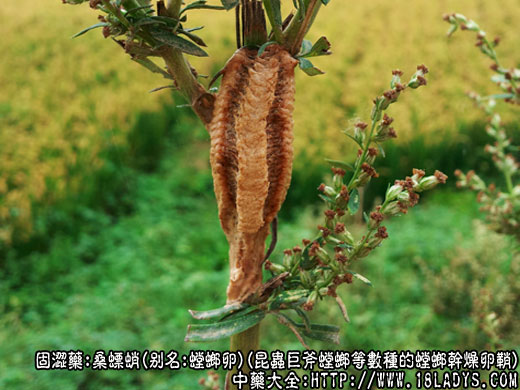
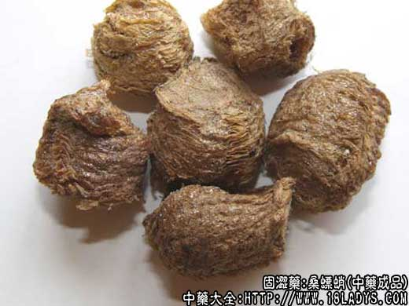
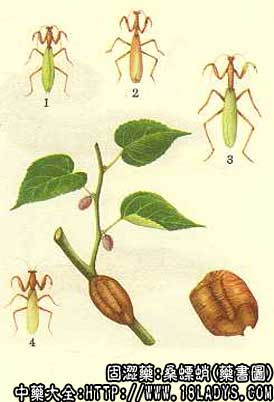

本品为常用中药。始载《神农本草经》，列为上品，商品有软体和硬体两种。
别名：桑蛸、螳螂卵、月螂子。
来源：为节肢动物螳螂科昆虫巨斧螳螂等数种的螳螂干燥卵鞘。均为野生。
产地：全国大部分地区均产。
采集加工：秋冬两季采集，采后除去附着的树皮或树枝，放蒸笼内蒸透，以杀死虫卵，否则在湿温度适宜时，虫卵孵化为成虫，使商品失去原重，并降低药效。
性状鉴别：呈块形，半圆柱形或类圆柱形，长2～5厘米，宽1～3厘米，由多数膜片状物体或海绵样泡沫物体粘合而成。表面黄褐色或黄褐色。附着树枝的一面略平坦，或有一条凹槽，另一面有一条鳞片状紧密排列的凸起脊，或凸起不甚明显。体轻松有韧性（软体）、或坚结（硬体）。易横向断裂，断面中部有多数放射状排列的卵室，每室有卵一枚，卵呈棒状，黄棕色，外围有一层海绵状厚鞘层，或硬鞘状薄层。气微腥，味淡。
习惯认为软体者好，两者均以个大，完整，卵未孵化，淡黄褐色者为佳。
主要成分：呈蛋白质，脂肪，铁，钙和胡萝卜素。
药理作用：主要为抗利尿，也有敛汗作用。
炮制：生用。
性味：甘、咸、平。
归经：入肝、肾经。
功能：益肾，涩精，缩小便。
主治：肾虚遗精，白带，老人小便频数，小儿遗尿等症。
临床应用：
1、治尿频、夜尿或小便不禁。如属成人之肾虚多尿，须配山茱萸、沙苑子。当归、黄芪等补益药，方如固脬（读抛）汤；如属小儿夜间遗尿，则配远志、茯神等镇静药和党参、当归等补益药，方如桑螵蛸散；也可在甘麦大枣汤的基础上加桑螵蛸，都有较好效果。
2、治肾虚遗精、滑泄，属无梦而遗者为较适宜，以桑螵蛸为辅助药，佐以补肾和其他固涩药，虚甚者加芡实、锁阳、肉苁蓉、覆盆子等；也可在金锁固精丸基础上加桑螵蛸。
使用注意：
1、小便短赤、阴虚火旺者忌用。
2、本品一般宜灸用，不宜生用，因生用反会引起腹泻。
用量：3～9g。
处方举例：
1、固脬（读抛）汤：桑螵蛸9g、山萸肉9g、沙苑子（或覆盆子）9g、当归6g、黄芪9g、茯神6g，茺蔚子9g、升麻3g，水煎服。
2、桑螵蛸散（《本草衍义》）：桑螵蛸6g、茯神9g、远志6g、党参9g、当归12g、菖蒲3g、龙骨9g、龟板12g，水煎服。
注：桑螵蛸因汤螳螂的品种不同，其卵鞘形状不一，常见的有两种：
1、软桑蛸：为大刀螂的卵鞘。
2、硬桑蛸：为小刀螂的卵鞘及巨斧螳螂的卵鞘。